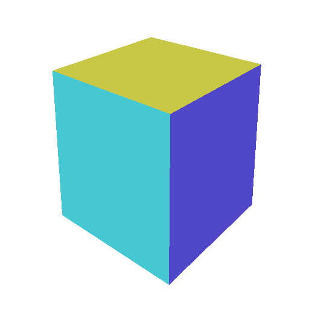

Este artículo es el octavo de una serie que esperamos que te enseñe sobre matemáticas 3D. Cada uno se basa en la lección anterior, por lo que es posible que te resulten más fáciles de entender leyéndolos en orden.
Una pila de matrices (matrix stack) es exactamente lo que parece: una pila (stack) de matrices. Es útil para posicionar y orientar cosas unas respecto a otras. Para demostrarlo, vamos a crear un conjunto de archivadores. Usar una pila de matrices facilitará esta tarea.
Para simplificarlo, los haremos a partir de cubos, comenzando con el último ejemplo del artículo anterior.
Lo primero que haremos es cambiar la F que hemos estado dibujando por un cubo unitario.
-function createFVertices() {
+function createCubeVertices() {
* // izquierda
* 0, 0, 0,
* 0, 0, -1,
* 0, 1, 0,
* 0, 1, -1,
*
* // derecha
* 1, 0, 0,
* 1, 0, -1,
* 1, 1, 0,
* 1, 1, -1,
* ];
*
* const indices = [
* 0, 2, 1, 2, 3, 1, // izquierda
* 4, 5, 6, 6, 5, 7, // derecha
* 0, 4, 2, 2, 4, 6, // frente
* 1, 3, 5, 5, 3, 7, // parte posterior
* 0, 1, 4, 4, 1, 5, // parte inferior
* 2, 6, 3, 3, 6, 7, // parte superior
* ];
*
* const quadColors = [
* 200, 70, 120, // columna izquierda frontal
* 80, 70, 200, // columna izquierda posterior
* 70, 200, 210, // parte superior
* 160, 160, 220, // travesaño superior derecho
* 90, 130, 110, // travesaño superior inferior
* 200, 200, 70, // entre travesaño superior y central
* ];
...
Los datos de arriba crean un cubo como este:

El código antiguo creaba previamente 26 “objectInfos”, donde cada “objectInfo” era un conjunto de buffer de uniform y bind group, uno para cada cosa que quisiéramos dibujar. Cambiemos el código para crearlos bajo demanda. De esa forma, podremos dibujar tantas cosas como queramos.
- const numFs = 5 * 5 + 1;
const objectInfos = [];
- for (let i = 0; i < numFs; ++i) {
function createObjectInfo() {
// matriz
const uniformBufferSize = (16) * 4;
const uniformBuffer = device.createBuffer({
...
- objectInfos.push({
+ return {
uniformBuffer,
uniformValues,
matrixValue,
bindGroup,
- });
+ };
}
Vamos a usar el mismo cubo unitario para todo por simplicidad, pero necesitamos alguna forma de cambiar un poco el color para poder distinguir los cubos. Así que actualicemos el fragment shader para que tome un color a través de nuestro buffer de uniform y multiplicaremos los colores de los vértices por este color de uniform. Eso nos permitirá cambiar ligeramente los colores de los vértices para cada cubo.
struct Uniforms {
matrix: mat4x4f,
+ color: vec4f,
};
struct Vertex {
@location(0) position: vec4f,
@location(1) color: vec4f,
};
struct VSOutput {
@builtin(position) position: vec4f,
@location(0) color: vec4f,
};
@group(0) @binding(0) var<uniform> uni: Uniforms;
@vertex fn vs(vert: Vertex) -> VSOutput {
var vsOut: VSOutput;
vsOut.position = uni.matrix * vert.position;
vsOut.color = vert.color;
return vsOut;
}
@fragment fn fs(vsOut: VSOutput) -> @location(0) vec4f {
- return vsOut.color;
+ return vsOut.color * uni.color;
}
Necesitamos actualizar la creación del buffer de uniform para añadir espacio para el nuevo color.
function createObjectInfo() {
- // matriz
- const uniformBufferSize = (16) * 4;
+ // matriz y color
+ const uniformBufferSize = (16 + 4) * 4;
const uniformBuffer = device.createBuffer({
label: 'uniforms',
size: uniformBufferSize,
usage: GPUBufferUsage.UNIFORM | GPUBufferUsage.COPY_DST,
});
const uniformValues = new Float32Array(uniformBufferSize / 4);
// offsets a los diversos valores de uniform en índices float32
const kMatrixOffset = 0;
+ const kColorOffset = 16;
const matrixValue = uniformValues.subarray(kMatrixOffset, kMatrixOffset + 16);
+ const colorValue = uniformValues.subarray(kColorOffset, kColorOffset + 4);
const bindGroup = device.createBindGroup({
label: 'bind group for object',
layout: pipeline.getBindGroupLayout(0),
entries: [
{ binding: 0, resource: uniformBuffer },
],
});
return {
uniformBuffer,
uniformValues,
+ colorValue,
matrixValue,
bindGroup,
};
}
Ahora necesitamos extraer el código que “dibuja” un objeto en una función.
let depthTexture;
+ let objectNdx = 0;
+ function drawObject(ctx, matrix, color) {
+ const { pass, viewProjectionMatrix } = ctx;
+ if (objectNdx === objectInfos.length) {
+ objectInfos.push(createObjectInfo());
+ }
+ const {
+ matrixValue,
+ colorValue,
+ uniformBuffer,
+ uniformValues,
+ bindGroup,
+ } = objectInfos[objectNdx++];
+
+ mat4.multiply(viewProjectionMatrix, matrix, matrixValue);
+ colorValue.set(color);
+
+ // subir los valores de uniform al buffer de uniform
device.queue.writeBuffer(uniformBuffer, 0, uniformValues);
+
+ pass.setBindGroup(0, bindGroup);
+ pass.draw(numVertices);
+ }
function render() {
+ objectNdx = 0;
...
const encoder = device.createCommandEncoder();
const pass = encoder.beginRenderPass(renderPassDescriptor);
pass.setPipeline(pipeline);
pass.setVertexBuffer(0, vertexBuffer);
- // actualizar X,Z del objetivo basándose en el ángulo
- settings.target[0] = Math.cos(settings.targetAngle) * radius;
- settings.target[2] = Math.sin(settings.targetAngle) * radius;
...
+ objectNdx = 0;
- objectInfos.forEach(({
- matrixValue,
- uniformBuffer,
- uniformValues,
- bindGroup,
- }, i) => {
- const deep = 5;
- const across = 5;
- if (i < 25) {
- // calcular posiciones de cuadrícula
- const gridX = i % across;
- const gridZ = i / across | 0;
-
- // calcular posiciones de 0 a 1
- const u = gridX / (across - 1);
- const v = gridZ / (deep - 1);
-
- // centrar y extender
- const x = (u - 0.5) * across * 150;
- const z = (v - 0.5) * deep * 150;
-
- // apuntar esta F desde su posición hacia la F objetivo
- const aimMatrix = mat4.aim([x, 0, z], settings.target, up);
- mat4.multiply(viewProjectionMatrix, aimMatrix, matrixValue);
- } else {
- mat4.translate(viewProjectionMatrix, settings.target, matrixValue);
- }
-
- // subir los valores de uniform al buffer de uniform
- device.queue.writeBuffer(uniformBuffer, 0, uniformValues);
-
- pass.setBindGroup(0, bindGroup);
- pass.draw(numVertices);
- });
pass.end();
const commandBuffer = encoder.finish();
device.queue.submit([commandBuffer]);
}
Añadimos una función drawObject que creará un nuevo “objectInfo” (un buffer de uniform y vistas de arrays tipados) si lo necesita. drawObject recibe un contexto llamado ctx que contiene el codificador del render pass y la viewProjectionMatrix actual. También recibe una matriz y un color. Rellena el buffer de uniform para este objeto multiplicando la matriz pasada con la viewProjectionMatrix, establece el bind group para usar ese buffer de uniform específico y llama a draw.
Ahora añadamos algo de código para usarlo para dibujar el cubo:
function render() {
...
const encoder = device.createCommandEncoder();
const pass = encoder.beginRenderPass(renderPassDescriptor);
pass.setPipeline(pipeline);
pass.setVertexBuffer(0, vertexBuffer);
...
objectNdx = 0;
+ const ctx = { pass, viewProjectionMatrix };
+ drawObject(ctx, mat4.rotationY(settings.baseRotation), [1, 1, 1, 1]);
pass.end();
const commandBuffer = encoder.finish();
device.queue.submit([commandBuffer]);
}
Arriba pasamos una matriz que rota alrededor del eje Y y el color blanco. Esto significa que el cubo se dibujará con sus colores de vértices sin cambios.
Necesitamos algunos retoques más para la interfaz de usuario (GUI) y la cámara:
- const radius = 200;
const settings = {
- target: [0, 200, 300],
- targetAngle: 0,
+ baseRotation: 0,
};
const radToDegOptions = { min: -360, max: 360, step: 1, converters: GUI.converters.radToDeg };
const gui = new GUI();
gui.onChange(render);
- gui.add(settings.target, '1', -100, 300).name('target height');
- gui.add(settings, 'targetAngle', radToDegOptions).name('target angle');
+ gui.add(settings, 'baseRotation', radToDegOptions);
...
function render() {
...
- const eye = [-500, 300, -500];
- const target = [0, -100, 0];
+ const eye = [0, 2, 3];
+ const target = [0, 1, 0];
const up = [0, 1, 0];
// Calcular una matriz de vista
const viewMatrix = mat4.lookAt(eye, target, up);
Tenemos un cubo.
Ahora que podemos renderizar cubos, usemos una pila de matrices para ayudarnos a crear un conjunto de archivadores.
Primero, creemos una clase para la pila de matrices.
class MatrixStack {
#matrix;
#stack;
constructor() {
this.reset();
}
reset() {
this.#matrix = mat4.identity();
this.#stack = [];
return this;
}
save() {
this.#stack.push(this.#matrix);
this.#matrix = mat4.copy(this.#matrix);
return this;
}
restore() {
this.#matrix = this.#stack.pop();
return this;
}
get() {
return this.#matrix;
}
set(matrix) {
return this.#matrix.set(matrix);
}
translate(translation) {
mat4.translate(this.#matrix, translation, this.#matrix);
return this;
}
rotateX(angle) {
mat4.rotateX(this.#matrix, angle, this.#matrix);
return this;
}
rotateY(angle) {
mat4.rotateY(this.#matrix, angle, this.#matrix);
return this;
}
rotateZ(angle) {
mat4.rotateZ(this.#matrix, angle, this.#matrix);
return this;
}
scale(scale) {
mat4.scale(this.#matrix, scale, this.#matrix);
return this;
}
}
La clase de arriba es bastante sencilla. Mantiene un #stack que es un array de matrices, y un #matrix que es efectivamente la matriz superior de la pila.
Añade un conjunto de métodos que usan las funciones mat4 que escribimos anteriormente para manipular la matriz en la parte superior de la pila.
Nota: Es una pila, pero elegí los nombres save (guardar) y restore (restaurar) en lugar de los más tradicionales push y pop porque save y restore coinciden con las funciones de la API Canvas 2D save y restore, que se usan para manipular su propia pila de matrices.
Una cosa a la que hicimos referencia arriba y que aún no existía es la función mat4.copy, así que vamos a proporcionarla.
const mat4 = {
+ copy(src, dst) {
+ dst = dst || new Float32Array(16);
+ dst.set(src);
+ return dst;
+ },
...
Con eso, dibujemos un solo cajón de archivador con un tirador. El cajón será un cubo grande. El tirador será un cubo pequeño.
+ const kHandleColor = [0.5, 0.5, 0.5, 1];
+ const kDrawerColor = [1, 1, 1, 1];
+
+ const kDrawerSize = [40, 30, 50];
+ const kHandleSize = [10, 2, 2];
+
+ const [kWidth, kHeight, kDepth] = [0, 1, 2];
+
+ const kHandlePosition = [
+ (kDrawerSize[kWidth] - kHandleSize[kWidth]) / 2,
+ kDrawerSize[kHeight] * 2 / 3,
+ kHandleSize[kDepth],
+ ];
+
+ function drawDrawer(ctx) {
+ const { stack } = ctx;
+ stack.save();
+ stack.scale(kDrawerSize);
+ drawObject(ctx, stack.get(), kDrawerColor);
+ stack.restore();
+
+ stack.save();
+ stack.translate(kHandlePosition);
+ stack.scale(kHandleSize);
+ drawObject(ctx, stack.get(), kHandleColor);
+ stack.restore();
+ }
+
+ const stack = new MatrixStack();
...
function render() {
...
// combinar las matrices de vista y proyección
const viewProjectionMatrix = mat4.multiply(projection, viewMatrix);
+ stack.save();
+ stack.rotateY(settings.baseRotation);
+ stack.translate([(kDrawerSize[kWidth] * -0.5), 0, 0]);
objectNdx = 0;
- const ctx = { pass, stack, viewProjectionMatrix };
- drawObject(ctx, mat4.rotationY(settings.baseRotation), [1, 1, 1, 1]);
+ const ctx = { stack, viewProjectionMatrix };
+ drawDrawer(ctx);
+ stack.restore();
pass.end();
const commandBuffer = encoder.finish();
device.queue.submit([commandBuffer]);
}
El código de arriba crea un MatrixStack y lo añade al contexto (ctx) pasado a drawDrawer. Lo usa para ayudarnos a calcular las matrices. En lugar de crear una matriz de rotación directamente, lo hacemos en la pila y luego nos trasladamos la mitad del ancho del cajón para centrarlo.
Pasamos la pila a drawDrawer, que dibuja 2 cubos. Uno lo escala al tamaño de kDrawerSize. El otro lo posiciona en kHandlePosition y lo escala al tamaño de kHandleSize. Como está usando la pila de matrices, ambos serán relativos a la rotación y traslación que ya estaban en la pila.
El cubo del cajón se dibuja con el color kDrawerColor, que es blanco, por lo que dejará los colores de los vértices sin cambios. El tirador se dibuja con el color kHandleColor, que es gris al 50%, por lo que dibujará el cubo más oscuro.
Un pequeño ajuste para la posición de la cámara:
- const eye = [0, 2, 3];
- const target = [0, 1, 0];
+ const eye = [0, 20, 100];
+ const target = [0, 20, 0];
const up = [0, 1, 0];
// Calcular una matriz de vista
const viewMatrix = mat4.lookAt(eye, target, up);
Eso nos da un cajón de archivador.
Podrías preguntar, ¿por qué molestarse con todo esto de una pila de matrices? Vamos a dibujar un archivador con 4 cajones y veremos por qué.
const kHandleColor = [0.5, 0.5, 0.5, 1];
const kDrawerColor = [1, 1, 1, 1];
+ const kCabinetColor = [0.75, 0.75, 0.75, 0.75];
+ const kNumDrawersPerCabinet = 4;
const kDrawerSize = [40, 30, 50];
const kHandleSize = [10, 2, 2];
const [kWidth, kHeight, kDepth] = [0, 1, 2];
const kHandlePosition = [
(kDrawerSize[kWidth] - kHandleSize[kWidth]) / 2,
kDrawerSize[kHeight] * 2 / 3,
kHandleSize[kDepth],
];
+ const kDrawerSpacing = kDrawerSize[kHeight] + 3;
function drawDrawer(ctx) {
const { stack } = ctx;
stack.save();
stack.scale(kDrawerSize);
drawObject(ctx, stack.get(), kDrawerColor);
stack.restore();
stack.save();
stack.translate(kHandlePosition);
stack.scale(kHandleSize);
drawObject(ctx, stack.get(), kHandleColor);
stack.restore();
}
+ function drawCabinet(ctx, numDrawersPerCabinet) {
+ const { stack } = ctx;
+
+ const kCabinetSize = [
+ kDrawerSize[kWidth] + 6,
+ kDrawerSpacing * numDrawersPerCabinet + 6,
+ kDrawerSize[kDepth] + 4,
+ ];
+
+ stack.save();
+ stack.scale(kCabinetSize);
+ drawObject(ctx, stack.get(), kCabinetColor);
+ stack.restore();
+
+ for (let i = 0; i < numDrawersPerCabinet; ++i) {
+ stack.save();
+ stack.translate([3, i * kDrawerSpacing + 5, 1]);
+ drawDrawer(ctx);
+ stack.restore();
+ }
+ }
function render() {
...
- const eye = [0, 20, 100];
- const target = [0, 20, 0];
+ const eye = [0, 80, 200];
+ const target = [0, 80, 0];
const up = [0, 1, 0];
// Calcular una matriz de vista
const viewMatrix = mat4.lookAt(eye, target, up);
// combinar las matrices de vista y proyección
const viewProjectionMatrix = mat4.multiply(projection, viewMatrix);
stack.save();
stack.rotateY(settings.baseRotation);
stack.translate([(kDrawerSize[kWidth] * -0.5), 0, 0]);
objectNdx = 0;
const ctx = { pass, stack, viewProjectionMatrix };
- drawDrawer(ctx);
+ drawCabinet(ctx, kNumDrawersPerCabinet);
stack.restore();
pass.end();
const commandBuffer = encoder.finish();
device.queue.submit([commandBuffer]);
}
Arriba, drawCabinet dibuja un cubo del tamaño de kCabinetSize, que es un poco más alto que el número de cajones que le pedimos dibujar. Luego simplemente usa la pila de matrices para trasladar cada cajón para que aparezca en la posición correcta y ligeramente frente al cubo del archivador.
No tuvimos que cambiar drawDrawer para nada. Gracias a la pila de matrices pudimos usarlo tal cual.
Sigamos. Dibujemos múltiples archivadores.
const kHandleColor = [0.5, 0.5, 0.5, 1];
const kDrawerColor = [1, 1, 1, 1];
const kCabinetColor = [0.75, 0.75, 0.75, 0.75];
const kNumDrawersPerCabinet = 4;
+ const kNumCabinets = 5;
const kDrawerSize = [40, 30, 50];
const kHandleSize = [10, 2, 2];
const [kWidth, kHeight, kDepth] = [0, 1, 2];
const kHandlePosition = [
(kDrawerSize[kWidth] - kHandleSize[kWidth]) / 2,
kDrawerSize[kHeight] * 2 / 3,
kHandleSize[kDepth],
];
const kDrawerSpacing = kDrawerSize[kHeight] + 3;
+ const kCabinetSpacing = kDrawerSize[kWidth] + 10;
...
function drawCabinet(ctx, numDrawersPerCabinet) {
const { stack } = ctx;
const kCabinetSize = [
kDrawerSize[kWidth] + 6,
kDrawerSpacing * numDrawersPerCabinet + 6,
kDrawerSize[kDepth] + 4,
];
stack.save();
stack.scale(kCabinetSize);
drawObject(ctx, stack.get(), kCabinetColor);
stack.restore();
for (let i = 0; i < numDrawersPerCabinet; ++i) {
stack.save();
stack.translate([3, i * kDrawerSpacing + 5, 1]);
drawDrawer(ctx);
stack.restore();
}
}
+ function drawCabinets(ctx, numCabinets) {
+ const { stack } = ctx;
+ for (let i = 0; i < numCabinets; ++i) {
+ stack.save();
+ stack.translate([i * kCabinetSpacing, 0, 0]);
+ drawCabinet(ctx, kNumDrawersPerCabinet);
+ stack.restore();
+ }
+ }
function render() {
...
// combinar las matrices de vista y proyección
const viewProjectionMatrix = mat4.multiply(projection, viewMatrix);
stack.save();
stack.rotateY(settings.baseRotation);
- stack.translate([(kDrawerSize[kWidth] * -0.5), 0, 0]);
+ stack.translate([(kNumCabinets - 0.5) * kCabinetSpacing * -0.5, 0, 0]);
objectNdx = 0;
const ctx = { pass, stack, viewProjectionMatrix };
- drawCabinet(ctx, kNumDrawersPerCabinet);
+ drawCabinets(ctx, kNumCabinets);
stack.restore();
pass.end();
const commandBuffer = encoder.finish();
device.queue.submit([commandBuffer]);
}
Ahora tenemos drawCabinets, que simplemente usa drawCabinet para dibujar tantos archivadores como especifiquemos. De vuelta en render, trasladamos la mitad del ancho de los archivadores para centrarlos.
Con suerte, esto da una idea de la utilidad de una pila de matrices. Nos permite reutilizar fácilmente cosas y posicionarlas, orientarlas y escalarlas.
Hagamos otro ejemplo. Creemos un árbol recursivo a partir de cubos. Para ello necesitamos una función que añada una “rama” al árbol. La haremos recursiva y le pasaremos treeDepth (profundidad del árbol). Si la profundidad es > 0, añadiremos recursivamente 2 ramas más y pasaremos una profundidad menor.
const degToRad = d => d * Math.PI / 180;
const settings = {
baseRotation: 0,
+ scale: 0.9,
+ rotationX: degToRad(20),
+ rotationY: degToRad(10),
};
const radToDegOptions = { min: -180, max: 180, step: 1, converters: GUI.converters.radToDeg };
+ const treeRadToDegOptions = { min: 0, max: 90, step: 1, converters: GUI.converters.radToDeg };
const gui = new GUI();
gui.onChange(render);
+ gui.add(settings, 'scale', 0.1, 1.2);
+ gui.add(settings, 'rotationX', treeRadToDegOptions);
+ gui.add(settings, 'rotationY', treeRadToDegOptions);
gui.add(settings, 'baseRotation', radToDegOptions);
+ const kTreeDepth = 6;
+ const [/*kWidth*/, kHeight, /*kDepth*/] = [0, 1, 2];
+ // Mueve el cubo de 1 unidad para que su centro esté sobre el origen, de modo que cuando escale
+ // lo haga hacia afuera en x y z, y hacia arriba (y) desde el origen
+ const kBranchPosition = [-0.5, 0, 0.5];
+ const kBranchSize = [20, 150, 20];
+
+ const kWhite = [1, 1, 1, 1];
+
+ function drawBranch(ctx) {
+ const { stack } = ctx;
+ stack
+ .save()
+ .scale(kBranchSize)
+ .translate(kBranchPosition);
+ drawObject(ctx, stack.get(), kWhite);
+ stack.restore();
+ }
+
+ function drawTreeLevel(ctx, offset, treeDepth) {
+ const { stack } = ctx;
+ const s = offset ? settings.scale : 1;
+ const y = offset ? kBranchSize[kHeight] : 0;
+ stack
+ .save()
+ .translate([0, y, 0])
+ .rotateZ(offset * settings.rotationX)
+ .rotateY(Math.abs(offset) * settings.rotationY)
+ .scale([s, s, s]);
+
+ drawBranch(ctx);
+
+ if (treeDepth > 0) {
+ drawTreeLevel(ctx, -1, treeDepth - 1);
+ drawTreeLevel(ctx, +1, treeDepth - 1);
+ }
+
+ stack.restore();
+ }
function render() {
...
- const eye = [0, 80, 200];
- const target = [0, 80, 0];
+ const eye = [0, 450, 1000];
+ const target = [0, 450, 0];
const up = [0, 1, 0];
// Calcular una matriz de vista
const viewMatrix = mat4.lookAt(eye, target, up);
// combinar las matrices de vista y proyección
const viewProjectionMatrix = mat4.multiply(projection, viewMatrix);
stack.save();
stack.rotateY(settings.baseRotation);
- stack.translate([(kNumCabinets - 0.5) * kCabinetSpacing * -0.5, 0, 0]);
objectNdx = 0;
const ctx = { pass, stack, viewProjectionMatrix };
- drawCabinets(ctx, kNumCabinets);
+ drawTreeLevel(ctx, 0, kTreeDepth);
stack.restore();
pass.end();
const commandBuffer = encoder.finish();
device.queue.submit([commandBuffer]);
}
drawTreeLevel usa nuestra pila de matrices. Primero llama a save para guardar la matriz actual. Luego la traslada (translate) para mover la rama al final de la rama actual. Si el offset es 0, es la raíz, por lo que no se necesita traslación.
El offset se usa luego para rotar (rotateZ) la rama actual, ya sea en sentido horario o antihorario. Debido a la pila de matrices, rotará en relación con la rama padre.
El offset se usa de nuevo para rotar la rama en Y (rotateY). Esta vez usamos el valor absoluto del offset. Siéntete libre de quitar el Math.abs para ver la diferencia.
Finalmente, escalamos (scale) la rama, haciendo que cada una sea más pequeña (o más grande) que su padre, excepto la raíz, la rama con un offset de 0.
Luego llamamos a drawBranch. drawBranch dibuja un cubo del tamaño de kBranchSize. También traslada el cubo unitario original para que esté centrado sobre el origen. De esa manera, cuando escale, crecerá hacia arriba (a lo largo del eje +Y).
Luego, si la profundidad > 0, llamamos recursivamente a drawTreeLevel para añadir 2 ramas más. Una con un offset de -1 y otra con +1. Cada rama comenzará con la matriz que haya en la pila, por lo que se posicionará y orientará en relación con su padre. Finalmente, restauramos (restore) la pila.
Ajusta “rotationX” y verás las ramas abrirse o agruparse. Ajusta “rotationY” y verás las ramas separarse del plano X. Es posible que necesites ajustar “baseRotation” para ver qué está pasando. Ajusta “scale” y verás cada rama hacerse más pequeña o más grande que su padre.
Tal vez esto te sirva de inspiración para crear un generador algorítmico de árboles. [1]
Añadamos un adorno a cada rama. En lugar de usar un cubo, usemos un cono para el adorno. Aquí hay algo de código para generar vértices de cono.
// la punta está en el origen, la base está debajo
function createConeVertices({radius = 1, height = 1, subdivisions = 6} = {}) {
const positions = [];
const colors = [];
function addVertex(angle, radius, height, color) {
const c = Math.cos(angle);
const s = Math.sin(angle);
positions.push(c * radius, height, s * radius);
colors.push(...color);
}
for (let i = 0; i < subdivisions; ++i) {
const angle0 = (i + 0) / subdivisions * Math.PI * 2;
const angle1 = (i + 1) / subdivisions * Math.PI * 2;
const u = (i + 1) / subdivisions;
const color = [u * 128 + 127, 0, 0];
// añadir lateral
addVertex(angle0, 0, 0, color);
addVertex(angle1, radius, -height, color);
addVertex(angle0, radius, -height, color);
// añadir parte superior (base)
addVertex(angle0, radius, -height, color);
addVertex(angle1, radius, -height, color);
addVertex(angle0, 0, -height, color);
}
const numVertices = positions.length / 3;
const vertexData = new Float32Array(numVertices * 4); // xyz + color
const colorData = new Uint8Array(vertexData.buffer);
for (let i = 0; i < numVertices; ++i) {
const position = positions.slice(i * 3, i * 3 + 3);
vertexData.set(position, i * 4);
const color = colors.slice(i * 3, i * 3 + 3);
colorData.set(color, i * 16 + 12);
colorData[i * 16 + 15] = 255;
}
return {
vertexData,
numVertices,
};
}
El código de arriba recorre un círculo y añade un triángulo en cada lado y un triángulo correspondiente en la base. Establece cada cara en un tono de rojo. Al igual que la función del cubo, devuelve vertexData y numVertices. Veremos cómo crear varias primitivas geométricas en otro artículo.
Envolvamos nuestro código que crea un buffer de vértices en una función para que podamos llamarla dos veces, una para el cubo y otra para el cono.
- const { vertexData, numVertices } = createCubeVertices();
+ function createVertices({vertexData, numVertices}, name) {
* const vertexBuffer = device.createBuffer({
- label: `vertex buffer vertices`,
+ label: `${name}: vertex buffer vertices`,
size: vertexData.byteLength,
usage: GPUBufferUsage.VERTEX | GPUBufferUsage.COPY_DST,
});
device.queue.writeBuffer(vertexBuffer, 0, vertexData);
+ return {
+ vertexBuffer,
+ numVertices,
+ };
* }
+ const cubeVertices = createVertices(createCubeVertices(), 'cube');
+ const ornamentVertices = createVertices(createConeVertices({
+ radius: 20,
+ height: 60,
+ }), 'adorno');
Luego actualicemos nuestra función drawObject para que tome un parámetro de vértices.
- function drawObject(ctx, matrix, color) {
+ function drawObject(ctx, vertices, matrix, color) {
const { pass, viewProjectionMatrix } = ctx;
+ const { vertexBuffer, numVertices } = vertices;
if (objectNdx === objectInfos.length) {
objectInfos.push(createObjectInfo());
}
const {
matrixValue,
colorValue,
uniformBuffer,
uniformValues,
bindGroup,
} = objectInfos[objectNdx++];
mat4.multiply(viewProjectionMatrix, matrix, matrixValue);
colorValue.set(color);
// subir los valores de uniform al buffer de uniform
device.queue.writeBuffer(uniformBuffer, 0, uniformValues);
+ pass.setVertexBuffer(0, vertexBuffer);
pass.setBindGroup(0, bindGroup);
pass.draw(numVertices);
}
y actualizamos el código que dibuja una rama para pasar los vértices del cubo:
function drawBranch(ctx) {
const { stack } = ctx;
stack
.save()
.scale(kBranchSize)
.translate(kBranchPosition);
- drawObject(ctx, stack.get(), kWhite);
+ drawObject(ctx, cubeVertices, stack.get(), kWhite);
stack.restore();
}
Y ya no necesitamos configurar el buffer de vértices al principio.
function render() {
...
const encoder = device.createCommandEncoder();
const pass = encoder.beginRenderPass(renderPassDescriptor);
pass.setPipeline(pipeline);
- pass.setVertexBuffer(0, vertexBuffer);
...
Y luego, añadamos algo de código a drawTreeLevel para dibujar un adorno cuando la profundidad sea igual a cero.
function drawTreeLevel(ctx, offset, treeDepth) {
const { stack } = ctx;
const s = offset ? settings.scale : 1;
const y = offset ? kBranchSize[kHeight] : 0;
stack
.save()
.translate([0, y, 0])
.rotateZ(offset * settings.rotationX)
.rotateY(Math.abs(offset) * settings.rotationY)
.scale([s, s, s]);
drawBranch(ctx);
if (treeDepth > 0) {
drawTreeLevel(ctx, -1, treeDepth - 1);
drawTreeLevel(ctx, +1, treeDepth - 1);
}
+ if (treeDepth === 0 && offset > 0) {
+ const position = vec3.getTranslation(stack.get());
+ drawObject(ctx, ornamentVertices, mat4.translation(position), kWhite);
+ }
stack.restore();
}
Estamos usando una función vec3.getTranslation que necesitamos suministrar.
const vec3 = {
...
+ getTranslation(m, dst) {
+ dst = dst || new Float32Array(3);
+
+ dst[0] = m[12];
+ dst[1] = m[13];
+ dst[2] = m[14];
+
+ return dst;
+ },
};
getTranslation obtiene la traslación actual de una matriz, como cubrimos en el artículo sobre matemáticas 3D.
Arriba, el código que añadimos para dibujar un adorno llama a getTranslation para obtener la traslación actual de la pila de matrices. Esta será la base de la última rama. No podemos simplemente dibujar un adorno directamente desde la pila de matrices porque estaría orientado y escalado con la rama, y queremos que los adornos cuelguen hacia abajo. Así que, en su lugar, obtenemos la traslación actual de la pila y luego pasamos una matriz con esa traslación. Como la traslación está en la base de la rama, solo necesitamos dibujar uno, por lo que solo dibujamos si offset > 0. De lo contrario, dibujaríamos 2 adornos en la misma ubicación exacta.
A continuación, grafos de escena.
Probablemente no sería normal generar un árbol a partir de cubos o cilindros individuales. Se usaría la técnica de recursión y una pila de matrices, pero en lugar de dibujar cubos usaríamos las matrices para ayudar a generar vértices y construir una única malla (mesh) para todo el árbol. ↩︎